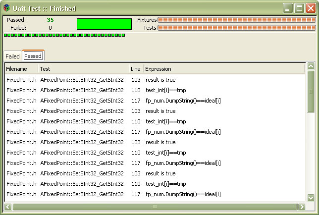
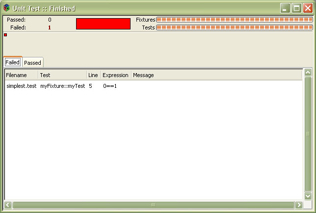

unittest is designed to be a simple-to-use unit-testing framework. It tries to combine the best aspects of CppUnit, CppUnitLite, and CxxUnit, while remaining very lightweight. The framework is designed for C++, and would have to be rebuilt fairly completely to be ported to another language. On the other hand, it should work with any Standard C++ compiler on any operating system. So far it has only been tested under gcc.
You can find the complete source code documentation here: http://dosadi.bbhc.org/darcs/unittest/docs/html/index.html Tarball: unittest_docs.tar.bz2
darcs get http://dosadi.bbhc.org/darcs/unittest
In the repository you will receive the documentation (also found online here), some examples, the unittest script and the unittest framework.
In order to make the best use of the framework, you can put the script in a reasonable place. This might, for example, be the scripts directory under your python installation. The script is setup with the normal unix hash-bang, so you can just execute it directly from the shell if it's in your path. You might also just want to have a copy of it in the directory where you have all of your tests. It's location is entirely up to you.
Under the include directory in the repository you will find a directory called "unittest". This directory must be copied to the default include directory for your compiler, or to some other location that is in your include path. If you wish to keep the framework with your tests, you can simply add the "unittest" directory and it's contents to the include directory for your project.
Finally, if the unittest framework will always be in the same place relative to your project, you can use the --include-path switch or UT_INCLUDE_PATH directive, and unittest will automatically add that path to the include path for your compiler. e.g.
python unittest.py --include-path=../../include simple.test
Or in at least one of your test files:
UT_INCLUDE_PATH(../../include)
Note that the path may be any valid path, and does not need to be the one shown. The only restriction is that the path may not contain a ')' character.
One of the most annoying things about writing tests involves the amount of redundant typing that you have to do in order to get the test framework up. Additionally, many test frameworks provide support for suites, but make it complicated to build test suites. unittest makes it easy to do all of these things. Consider the following "simplest possible test":
Also see Inline Tests.
UT_FIXTURE(myFixture) UT_TEST(myTest) UT_ASSERT_EQUALS(0,1); UT_TEST_END UT_FIXTURE_END
This test will generate a fixture with a single test, plus a suite containing only that fixture.
Generating and compiling the test framwork works like this:
python unittest.py simplest.test g++ *.cpp -o simplest.exe
That's all there is to it. The unittest.py script generates a .cpp file for each .test file you pass on the command-line. In addition, it generates a file called test_suite.cpp that contains all the code for registering and running all tests in all fixtures.
unittest will also generate a build script for you. If you pass --build=unix it will generate a shell script, --build=windows will generate a batch file, and --build=buildfile will generate a buildfile. Buildfiles are useful if you are also using the build framework.
python unittest.py simplest.test --build=windows test.bat
The name of the build script generated is build_tests.bat for windows and build_tests.sh for unix. For the build framework it is "Buildfile"
If you run test.bat under examples/simplest in the distribution, you will see the following output:f simplest.cpp:18:1: 0==1 failed 1 failures 0 passes 1 total events
The single 'f' on the first line indicates that the test failed. For each test run you will see either an 'f' (for failed) or a '.' (for passed). Since this example only has one test, and that test is deliberately designed to fail, you get a single failure.
The next line that has any meaning is the error. You can see the module where the failure occurred, the line number, the column (always one at the moment), and then a message explaining what the failure was. This message is very simple, it just contains the expression and the fact that it failed. As we will see below, you can receive much more sophisticated information.
Finally, the bottom of the test delivers a summary of the tests. One test failed, no tests passed, and there was one total event. An event is essentially an assertion, but some assertions generate more than one event. For example, assertions that expect an exception will generate two events. One for the assertion expression, and one for the exception.
The framework also supports using a GUI to receive output about failed unit tests. The GUI is a GTK+ application, and requires you to have Gtk installed on your platform. So long as that's the case, all you have to do to use it is specify --output=gtk on the command line. Each green box is a unit test that passes, each red one a failure. Detailed information about the failures and sucesses is shown in the list views.
A passing suite looks like this:

On the other hand, a failing test suite will look like this:

Those who have developed Gtk applications in the past may know that it can be a pain to find all the proper headers and libraries for the compilation command-line. The Unit Test framework tries to alleviate this burden by doing quite a lot of work to find the correct paths it needs to compile, and the correct libraries to link. These are output for you into the generated build script for your platform. All in the spirit of making your life easier as a developer.
unittest uses macros to allow you to perform sophisticated tests. Between the UT_TEST() and UT_TEST_END statements you may write any valid C++ code. That code is copied verbatim into the generated file, per test. A test source file may have multiple fixtures, and each fixture can have multiple tests. All fixtures specified on the command line are added into the same suite, and are thus run when that suite is invoked.
The following assertions are availble:
Each of these also has a _MSG counterpart, e.g. UT_ASSERT_EQUALS_MSG. The _MSG counterparts expect a string as the final parameter. That string will be injected in the message sent to the listener, and will be displayed in the output if the assertion fails.
The macros UT_ASSERT_EQUALS, UT_ASSERT_LESS, and UT_ASSERT_GREATER expect two parameters that are the left and right expressions to be evaluated respectively. For example:
UT_ASSERT_LESS(var_a, var_b); UT_ASSERT_LESS_MSG(var_a, var_b, "Variable a is less than variable b.");
If any exceptions are thrown during the execution of the assertion, unittest will fail the assertion and try to gather as much information about the exception as possible. In the case of any "standard" exceptions (i.e. from the STL), you will receive detailed information from the exception. Otherwise you may just receive a message that an unknown exception was caught.
For handling exceptions, we have three macros that are more sophisticated. The first two, UT_ASSERT_EXCEPTION, and UT_ASSERT_NORESULT_EXCEPTION, are similar. They each take one parameter which is the expression to evaluate. The first macro will evaluate the result of the expression and pass or fail on it, as well as if an exception was caught. The second one will only pass or fail if an exception was caught.
The final macro, UT_EXPECT_EXCEPTION allows you to expect a certain type of exception. This may be any exception type that your program knows of. It takes two parameters. The first is the expression to evaluate (the result is ignored), and the second is the type of exception expected. If the expression evaluation throws the expected type of exception, then the assertion passes. If it does not throw an exception, or if it throws any other kind of exception, the assertion fails.
unittest supports some advanced directives that are useful for writing unit tests in unusual situations. For example, if you are writing a kernel or a driver and want to test some of the code in userland, the following directives might be of help. These directives require the use of the --preprocess command-line switch.
This particular directive lets you replace #include <> and #include "" directives in the source code.
UT_REPLACE_INCLUDE "alloc\.h", "malloc.h"
This will replace all instances of the alloc.h header in the source file, and all included source files with malloc.h. If unittest's generator cannot find a source file (e.g. it's not in the include path that it knows about) it will simply issue a warning and continue.
Note the use of the backslash. unittest uses regular expressions, so the search and replace strings can use all normal Python regular expression constructs.
This is much like UT_REPLACE_INCLUDE, but instead lets you define and regular expression for replacing. It uses the full power of Python's RE module. So, for example:
UT_REPLACE_TOKEN "u(\w+\d+)", "U\1"
Would replace all occurrences of "uint32" with "Uint32", and "uint8" with "Uint8". This directive operates over the entire source, including all included files. The replacement is global, so that is something that should be kept in mind when using them.
A good example of when this could come in handy is testing the hash_table code for a kernel. Say the kernel has two functions: kalloc and kfree, and includes the header alloc.h. In order to test it, you might need to do this:
// UT_REPLACE_INCLUDE "alloc\.h", "malloc.h" // UT_REPLACE_TOKEN "kalloc", "malloc" // UT_REPLACE_TOKEN "kfree", "free"
And then at the bottom of the header for your hash table code, put this:
// UT_INCLUDE("hash_table.c")
To build the unit test you would do this:
python unittest.py --preprocess --build=unix hash_table.h sh test.sh
Q: What command-line options are available?